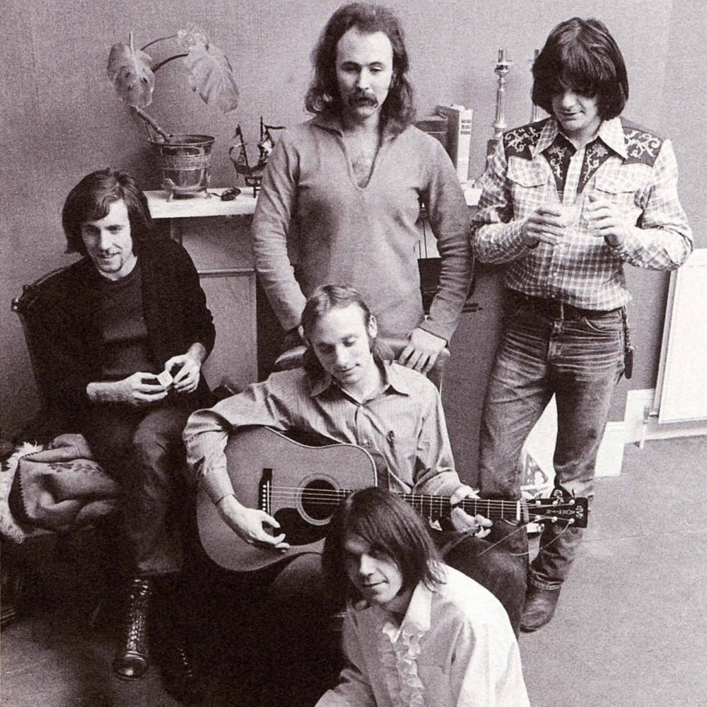

Crosby, Stills, Nash & Young
Years Active: 1968–1970, 1973–1974, 1976–2015
Genre/s: Folk rock, soft rock, country rock, folk pop
Label/s: Atlantic, Reprise
Past Members: David Crosby, Stephen Stills, Graham Nash, Neil Young
Crosby, Stills & Nash (CSN) was a folk rock supergroup composed of the American singer-songwriters David Crosby (formerly of the Byrds) and Stephen Stills (formerly of Buffalo Springfield) and the English-American singer-songwriter Graham Nash (formerly of the Hollies). When joined by the Canadian singer-songwriter Neil Young (also formerly of Buffalo Springfield), they were known as Crosby, Stills, Nash & Young (CSNY). They are noted for their intricate vocal harmonies and lasting influence on American music and culture, their political activism and their tumultuous relationships.
CSN formed in 1968 shortly after Crosby, Stills and Nash performed together informally, discovering they harmonized well. Crosby had been asked to leave the Byrds in late 1967, Buffalo Springfield had broken up in early 1968, and Nash left the Hollies in December. They signed a recording contract with Atlantic Records in early 1969. Their first album, Crosby, Stills & Nash (1969), produced the Top 40 hits "Suite: Judy Blue Eyes" and "Marrakesh Express". In preparation for touring, the trio added Young, Stills's former Buffalo Springfield bandmate, as a full member, along with the touring members Dallas Taylor (drums) and Greg Reeves (bass). As Crosby, Stills, Nash & Young, they performed at the Woodstock festival that August.
The band's first album with Young, Déjà Vu, reached number one on several international charts in 1970. It remains their best-selling album, selling more than eight million copies and producing the hit singles "Woodstock", "Teach Your Children", and "Our House". The group's second tour, which produced the live double album 4 Way Street (1971), was fraught with arguments between Young and Taylor - which resulted in Taylor being replaced by John Barbata - and tensions with Stills. At the end of the tour they disbanded. The group reunited several times, sometimes with Young, and released eight studio and four live albums. CSN's final studio album was 1999's Looking Forward, and they remained a performing act until 2015. Crosby died in 2023.
Crosby, Stills & Nash were inducted into the Rock and Roll Hall of Fame in 1997 and all three members were also inducted for their work in other groups: Crosby for the Byrds, Stills for Buffalo Springfield and Nash for the Hollies. Young was also inducted as a solo artist and as a member of Buffalo Springfield.